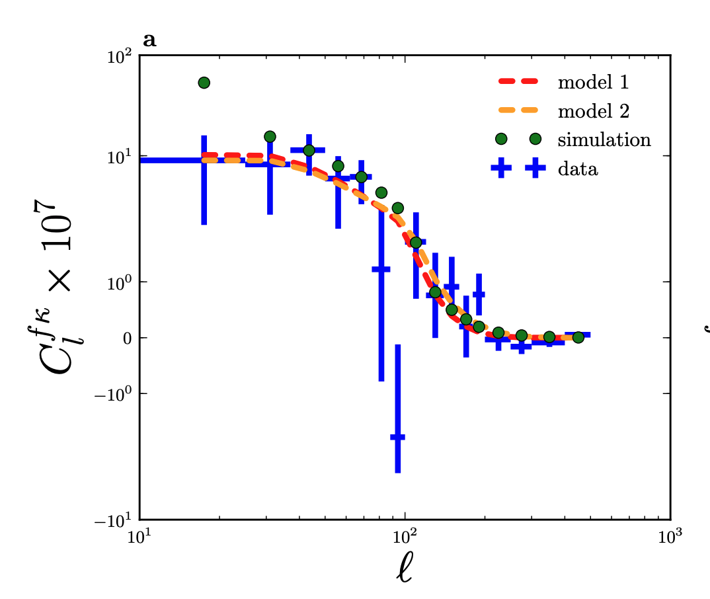

Cosmic filaments, the CMB perspective.
13 July 2021.
Context and scope
In this posting we will look at the imprint of cosmic filaments, the intricate web of structure formed by the matter distribution, on CMB lensing and Compton-$y$ maps, which probe the integrated matter and electronic pressure distribution out to high redshift.
One motivation behind this kind of analysis is the study of the missing-baryon problem, the fact that CMB and BBN data predict a larger baryonics energy density than observed so far in the local Universe. A possible explanation is that a large fraction (30 − 50%) of baryons reside in a warm-hot intergalactic medium (WHIM) phase, with temperatures in the range $T_{\rm whim} = 10^{5−7}$ K, too warm to absorb efficiently and too cold to emit X-rays. While CMB lensing-filaments cross-correlations can tell us about the filaments bias, i.e. how filaments trace the underlying matter distribution, the Compton-$y$ - filaments signal should depend in principle on the free baryon fraction.
Two previous analyses have looked at the filamentary signal in compton-$y$ maps by stacking them at the location of (spec-$z$) galaxies, see Tanimura+19 and de Graaff+19. In the harmonic domain, He+18 have measured the cross-correlation signal (cross-power spectrum) between filaments and CMB lensing convergence map. Here we follow the second approach and apply it to Planck compton-$y$ maps.
Filaments intensity maps
Here I'm using a recently publicly released filaments catalogue extracted from spectroscopic SDSS galaxy data (BOSS and eBOSS). The filaments are detected by applying a version of the Subspace-Constrained Mean Shift boosted with Machine Learning Techniques to thin slices of the redshift component in a tomographic analysis (in a nutshell, filaments are found in each redshift bin as the density ridge of the smoothed galaxy density field).
The catalogue is divided into 3 blocks, depending on the data used:
- Block 1: using BOSS (mainly LOWZ) data, with $0.05 < z < 0.45$. Only points in the LOWZ footprint are used, in both Galactic Hemispheres.
- Block 2: using BOSS CMASS data, with redshift $0.45 < z < 0.7$, in both Galactic Hemispheres.
- Block 3: using BOSS+eBOSS data (LRG and QSO), with redshift between $0.6 < z < 2.2$. Only points in the smaller eBOSS footprint are used, in the North Galactic Hemisphere only.
I follow He+18 and define the filament intensity as $$ I(\hat{n}, z)=\frac{1}{\sqrt{2 \pi \rho_{f}(\hat{n}, z)^{2}}} \exp \left(-\frac{\left\|\hat{n}-\hat{\Pi}_{f}(\hat{n},z)\right\|^{2}}{2 \rho_{f}(\hat{n}, z)^{2}}\right), $$ where $\hat{\Pi}_{f}(\hat{n},z)$ is the angular position of the closest point to $\hat{n}$ on the nearest filament and $\rho_{f}(\hat{n}, z)^{2}$ is the uncertainty of the filament at the projected position $\hat{\Pi}_{f}(\hat{n},z)$.
With the intensity maps at each redshift bin, we can then construct the filament intensity overdensity map as $$ \delta_{f}(\hat{n})=\frac{\int I(\hat{n}, z) d z-\bar{I}}{\bar{I}}, \quad \bar{I}=\frac{\int I(\hat{n}, z) d\Omega_{\hat{\imath}} d z}{\int d \Omega_{\hat{\imath}}}. $$ We will use the overdensity map $\delta_{f}(\hat{n})$ to measure the cross-correlation with lensing and compton-$y$.
In the following we will make use of two set of masks:
- Baseline mask: defined by the combination of the SDSS filaments footprint and the Compton-$y$ and CMB lensing masks (Galactic masks + pt srcs)
- Baseline mask + SDSS redMaPPer cluster: in order to test the impact of clusters at the intersection of filaments on our signal we combine the map above with one where we mask out SDSS redMaPPer clusters out to 5 arcmin
Few notes about the analysis
- Power spectra are extracted using
NaMaster(all fields involved are spin-0) - Maps are produced at an
HEALPixresolution ofNside=512 - Gaussian approximation to estimate the covariance matrix (i.e. error bars)
Cross-correlation with CMB lensing
We start by cross-correlating the filament overdensity map with the (minimum-variance) CMB lensing map from Planck. Note that this is similar to what done in He+18, although they used a different filaments catalogue (also based on spec-$z$ SDSS data) and the Planck 2015 CMB lensing map, so this will serve as a consistency check.
These results can be compared to the CMB lensing - filaments cross-power spectrum presented in He+18 and shown below. As we can see, they are in qualitative agreement.
Cross-correlation with CMB Compton-$y$
We now move on to correlate the filaments overdensity maps with the PlanckNILC/MILCA compton-$y$ maps.
The MILCA and NILC maps have been found to be in good agreement in different studies, although the NILC map has a higher noise level on large scales.
In addition to the $C_{\ell}^{yf}$ cross-spectra we will also perform a rudimentary null test where we correlate a half-difference $y$-map
constructed as $y^{-}=\frac{y^{\rm first}-y^{\rm last}}{2}$ with the filaments; this cross-spectrum is of course expected to be zero.
Conclusions & Next Steps
We have measured the cross-correlation signal between filaments (from SDSS) and compton-$y$/CMB lensing maps (from Planck). While we haven't properly estimated a significance of the detection, a non-null signal is seen in the LOWZ and CMASS cases, as also corroborated by the simple null test we performed on the $y$ maps.
The analysis presented here
- Develop framework to interpret the measurement, would be cool to estimate some parameter like free electron fraction or the like
- Include compton-$y$ map inhomogenous weighting
- In principle it would be interesting to use simulations to validate the analysis and to estimate error bars (although that would likely require a filament detection machinery that we dont have)